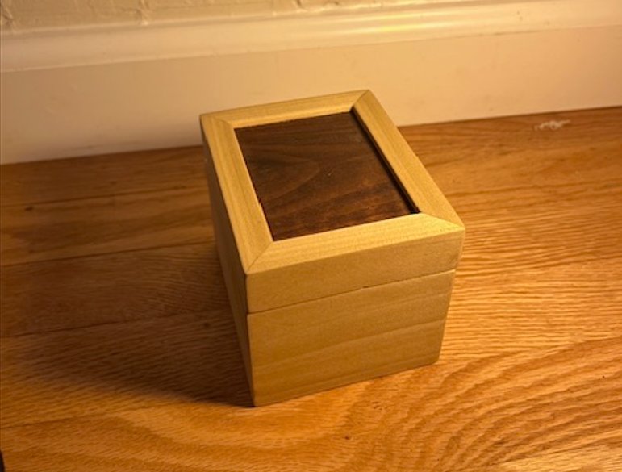
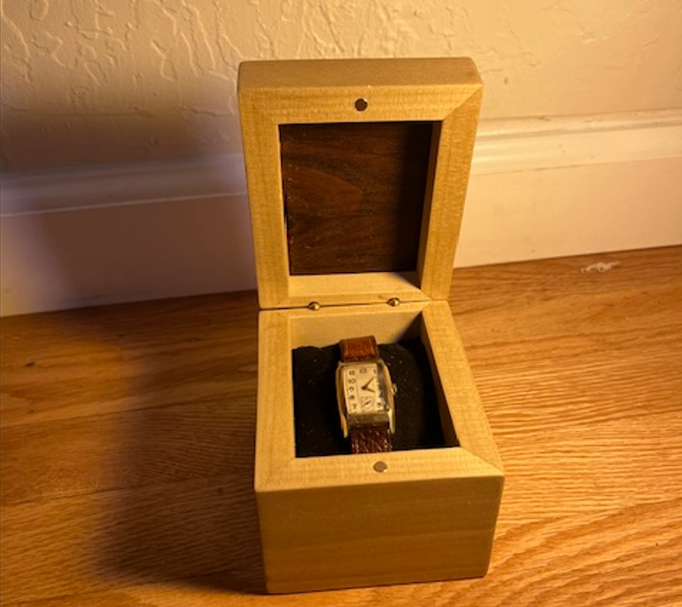

A running gallery of the smaller builds, repairs, and experiments that don’t need their own full writeup.


Keepsake Box
A small box for a family heirloom wristwatch, built with poplar sides and walnut top and bottom panels, shown closed and with the watch resting inside.